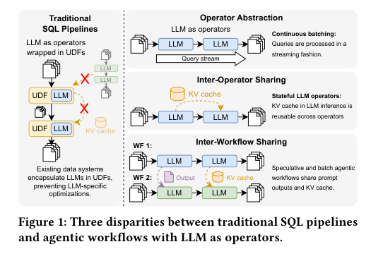
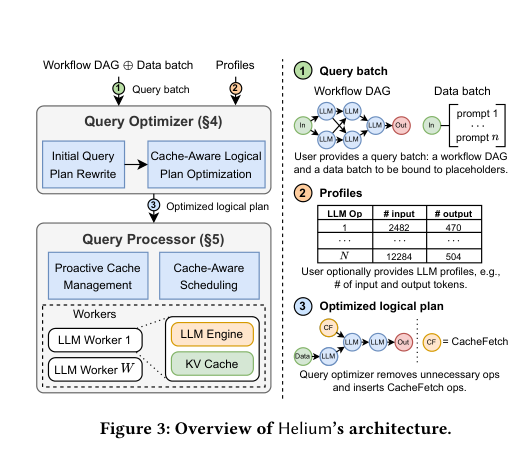
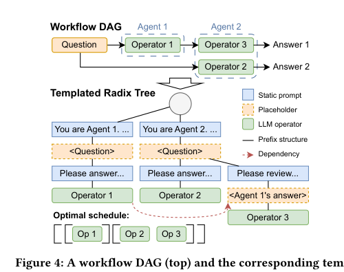
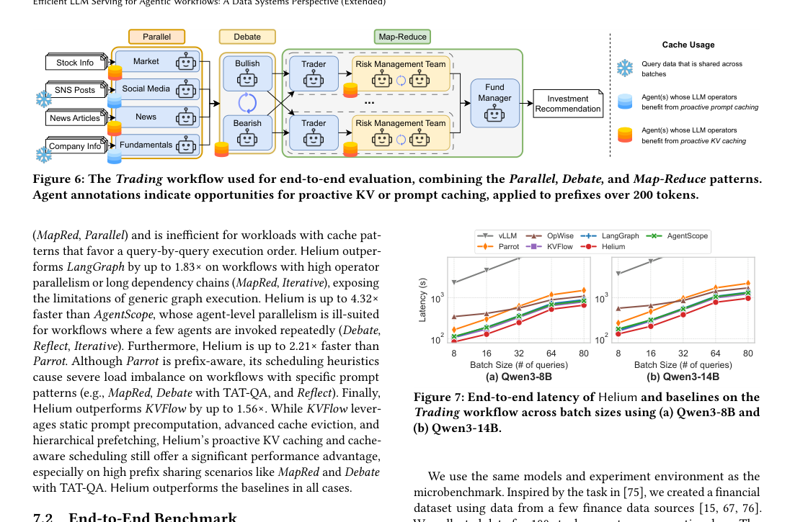
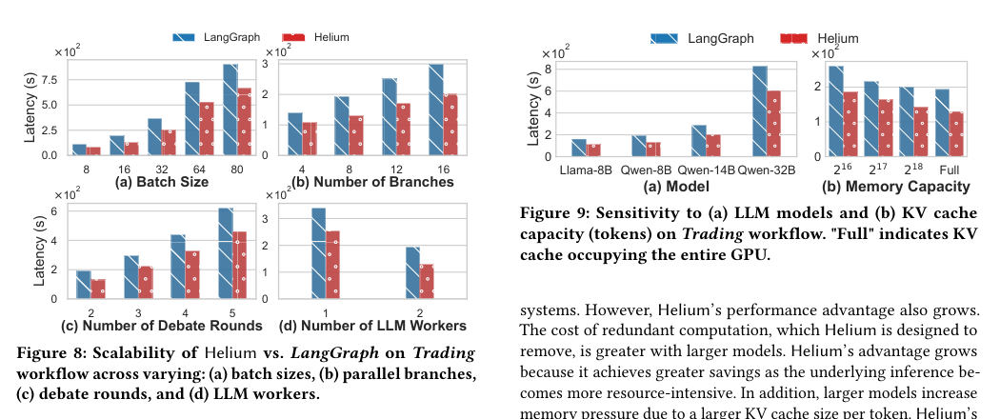

Helium：面向 Agentic Workflows 的高效 LLM Serving 中文翻译稿
摘要。Helium 研究的是 agentic workflows 中的 LLM serving 问题。传统 data system 可以把 SQL pipeline 优化成 operators 之间的数据流，但 LLM application 往往把每次模型调用当成远程黑盒 API，导致跨请求依赖、重复 prompt、共享上下文和 cache locality 都无法被系统看见。Helium 把 LLM 调用抽象成 workflow DAG 中的 operator，并把输入 token、输出 token、batch size、KV cache 容量和动态分支都纳入执行计划。系统由 query optimizer 和 query processor 组成，前者做 cache-aware logical planning，后者在运行时做 cache-aware scheduling、proactive cache management 和 worker coordination。实验表明，在 trading、map-reduce、debate、agent review 等工作流中，Helium 相比 LangGraph、vLLM 和 naive pipeline 能显著降低端到端延迟，并在更高 batch size 和更多 worker 下保持更好的扩展性。
1 引言
论文的起点很清楚：LLM 应用正在从单轮问答变成多步骤工作流。一个 workflow 可能先检索资料，再让多个 agent 并行分析，之后汇总、反思、重写或投票。每一步都是 LLM operator，operator 之间有数据依赖，也会产生重复 prompt 和可复用 KV cache。
传统 LLM serving 只看到一条条独立请求，因此只能优化单个 request 的 batching、routing 或 prefix cache。它不知道这些请求属于同一个 workflow，也不知道某个 operator 的输出会喂给哪个下游 operator。Helium 的核心主张是：agentic workflows 应该像数据库 query plan 一样被系统化优化，而不是只在应用层串联 API 调用。

2 问题与系统目标
Helium 观察到 agentic workflow 有三类重要结构。第一是 parallel：多个 agent 或多个子任务可以同时运行。第二是 map-reduce：长文档被分块处理，再合并结果。第三是 reflexive：模型输出会触发下一轮自评、修正或调用工具。这些结构都让单请求调度策略失效。
系统要解决两类矛盾。计算上，LLM engine 喜欢把足够多请求放入 batch，提高 GPU 利用率；应用上，workflow 更关心最终结果完成时间，而不是某个中间请求的局部 latency。内存上，KV cache 能减少重复 prefill，但 cache 容量有限，错误地保留低价值 cache 会挤掉更关键的下游状态。
3 系统架构
Helium 将应用提交的 workflow DAG 转换为 query batch。每个节点是 LLM operator，边表示数据依赖。系统先通过 profiling 得到不同 operator 的输入长度、输出长度和运行代价，再交给 query optimizer 生成 cache-aware logical plan。运行阶段由 query processor 负责调度 worker、插入 CacheFetch 操作，并根据执行进度调整 cache。

Query optimizer 的关键任务是识别哪些中间 prompt 或 KV cache 未来会被复用，并把复用机会显式放入计划。Query processor 则需要在 worker 层面做选择：哪些 operator 现在运行，哪些 cache 预取或保留，哪些请求可以合批，哪些请求必须等待上游结果。
4 调度与 CacheFetch
Helium 的一个重要设计是把 cache 操作显式化。对于多个 agent 共享的 static prompt、few-shot examples 或上游输出，系统可以插入 CacheFetch，让下游 operator 在执行前直接拿到所需 KV state。这样可以减少重复 prefill，也让调度器知道某个请求是否因为 cache 未就绪而暂时不适合运行。

调度层的目标不是简单先来先服务，而是结合工作流结构优化端到端时间。对于 map 阶段，系统倾向于提高并行度和 batch 利用率；对于 reduce 或 reflexive 阶段，系统更关注关键路径。论文把这些模式都纳入 cost model，避免局部吞吐最优拖慢最终结果。
5 实验结果
实验包含合成工作流和真实场景。Trading workflow 中，系统把并行分析、debate 和 map-reduce 模式组合起来评估；Helium 的优化计划比 LangGraph 等基线更少重复 prefill，并能降低 P95 latency。随着 batch size 增大，Helium 的优势更明显，因为它能同时利用 batching 和 cache locality。

Ablation 说明，单独使用 cache 或单独使用 workflow-aware scheduling 都不够。真正的收益来自二者联合：调度器知道 cache 未来是否会被下游复用，cache manager 也知道当前工作流是否在关键路径上。

6 局限与选题启发
Helium 仍是早期系统。它依赖 profiling 和工作流结构可见性；对开放式动态工具调用、外部环境状态变化、模型输出长度预测错误等问题处理有限。论文也没有把多层 KV cache placement 或跨节点网络传输作为主线。
对本仓库方向的意义。这篇最适合作为“agent workflow + KV/state locality + scheduling”的主线参考。它提醒后续选题不要只做单请求 cache policy，而要让调度器看到 DAG、branch、共享 prompt 和端到端目标。可延伸的问题是：在 conditional DAG 中，如何根据分支概率、输出长度预测和 cache reuse probability 联合决定调度、预取和保留。
参考说明
参考文献保留在原 PDF 中。本文译稿覆盖摘要、引言、系统目标、架构、调度设计、实验和对选题的启发。